"Nuestro colegio lleva con orgullo el nombre de Miguel Grau, héroe nacional y ejemplo de valentía, sacrificio y liderazgo. A través de su legado buscamos inspirar a nuestros estudiantes a ser personas íntegras, comprometidas con su comunidad y con valores sólidos."
Institución Educativa · Primaria y Secundaria
El colegio que honra al
Caballero de los Mares
En Miguel Grau Seminario formamos personas íntegras, capaces de afrontar los retos del mañana con conocimiento, creatividad y valores sólidos.
0
Niveles educativos
0
Grados académicos
0
Pilares de valores
0
Héroe nacional
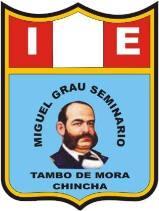
Quiénes somos
Una institución con propósito y vocación de servicio
El Colegio Miguel Grau Seminario es una institución educativa dedicada a la formación integral de los estudiantes, con un enfoque académico basado en valores como la responsabilidad y el respeto, promoviendo el desarrollo personal y social.
01Misión
Formar estudiantes íntegros mediante una enseñanza de excelencia que integra valores, conocimiento y tecnología para su desarrollo personal, académico y social.
02Visión
Ser una institución educativa referente y comprometida con la excelencia, desarrollando ciudadanos capaces de liderar el cambio con creatividad y ética.
Nuestros pilares
Valores que construyen carácter
El legado de Miguel Grau se traduce en una cultura escolar basada en la ética, el servicio y el compromiso con la comunidad.
Responsabilidad
Cumplimos con nuestros deberes y asumimos las consecuencias de nuestros actos con madurez.
Respeto
Valoramos a cada persona, la diversidad de ideas y el entorno que compartimos día a día.
Valentía
Enfrentamos los desafíos con coraje, perseverancia y honestidad, tal como nuestro héroe nacional.
Solidaridad
Trabajamos en equipo y nos comprometemos con el bienestar de nuestra comunidad educativa.
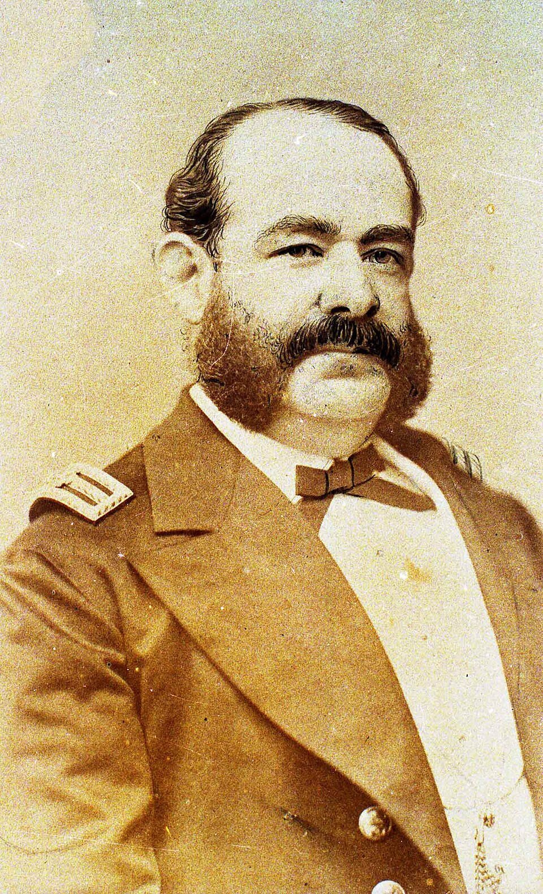
Gran Almirante del Perú
El Caballero de los Mares
Nuestro patrono
Miguel Grau Seminario, legado de honor y servicio
Nuestra institución lleva con orgullo el nombre del Gran Almirante del Perú, ejemplo universal de valentía, caballerosidad y amor por la patria.
-
1834 · Nace en Paita Nació el 27 de julio en la costa norte, en la región de Piura.
-
1879 · Combate de Angamos Al mando del monitor Huáscar, dio su vida en combate el 8 de octubre.
-
2000 · Peruano del Milenio Elegido por votación nacional como el peruano que mejor representa al país.
"Su grandeza no estuvo solo en el valor en combate, sino en la templanza, la gratitud y el respeto que demostró incluso hacia sus adversarios."
Oferta educativa
Una formación por etapas
Acompañamos a cada estudiante según su etapa de desarrollo, con metodologías activas y recursos innovadores que potencian su aprendizaje.
Cimientos
Refuerzo de habilidades básicas en lectura, escritura, matemáticas y desarrollo emocional.
- Lectoescritura y hábitos de estudio
- Acompañamiento socioemocional
- Aprendizaje lúdico y activo
Crecimiento
Fortalecimiento de la comprensión lectora, la resolución de problemas matemáticos y el inicio de ciencias.
- Comprensión lectora profunda
- Razonamiento matemático
- Primeros pasos en ciencias y ciencias sociales
Proyección
Desarrollo del análisis crítico, la investigación científica y la preparación para la secundaria.
- Análisis crítico e investigación
- Trabajo colaborativo
- Uso de recursos tecnológicos
Base sólida
Consolidación de conocimientos clave con énfasis en el pensamiento crítico y el trabajo en equipo.
- Matemáticas, lengua y comunicación
- Ciencias sociales y naturales
- Pensamiento crítico y resolución de problemas
Profundización
Consolidación de aprendizajes y profundización en áreas avanzadas, investigación y análisis.
- Matemáticas avanzadas y ciencias
- Humanidades y análisis crítico
- Investigación y proyectos
Rumbo a la universidad
Preparación integral para la educación superior y el examen de admisión a universidades.
- Nivelación preuniversitaria
- Orientación vocacional
- Habilidades para el éxito académico
Innovación educativa
Tecnología al servicio del aprendizaje
En nuestra institución trabajamos con diversas herramientas para favorecer el aprendizaje de nuestros estudiantes. Incorporamos el uso de la tecnología para hacer las clases más interactivas, dinámicas y modernas.
- Clases interactivas con presentaciones multimedia
- Recursos digitales y material didáctico moderno
- Compromiso con el desarrollo integral de cada estudiante
Vida escolar
Un vistazo a nuestra comunidad
Fotos propias de la institución (tomadas de la página oficial de Facebook del
colegio) y de los lugares del distrito. Para sumar más, guarda las imágenes desde el
Facebook del colegio (clic derecho → «Guardar imagen como…») en img/
con nombres galeria-6.jpg en adelante y avísame para enlazarlas.
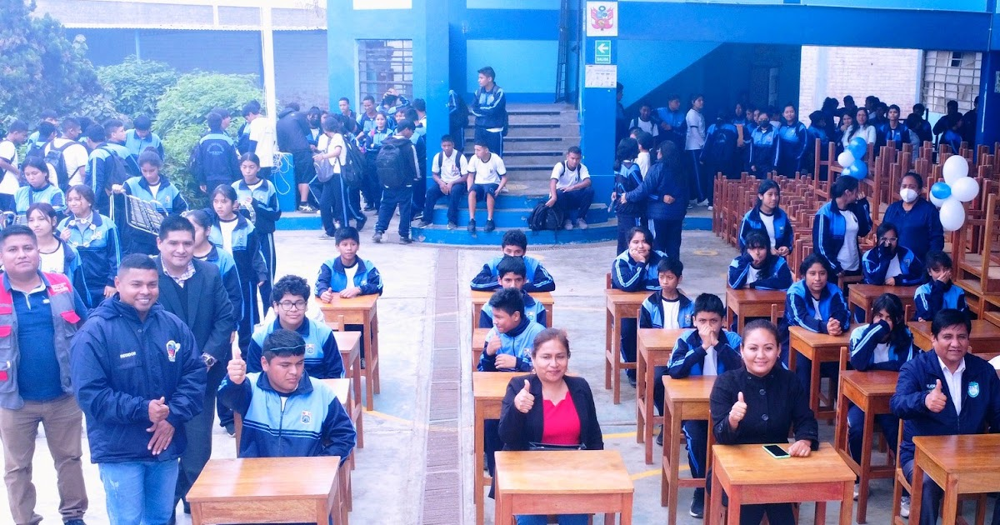
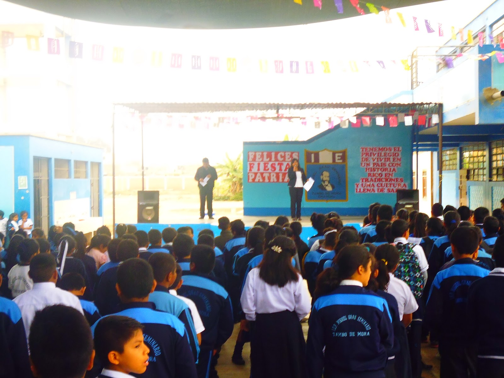
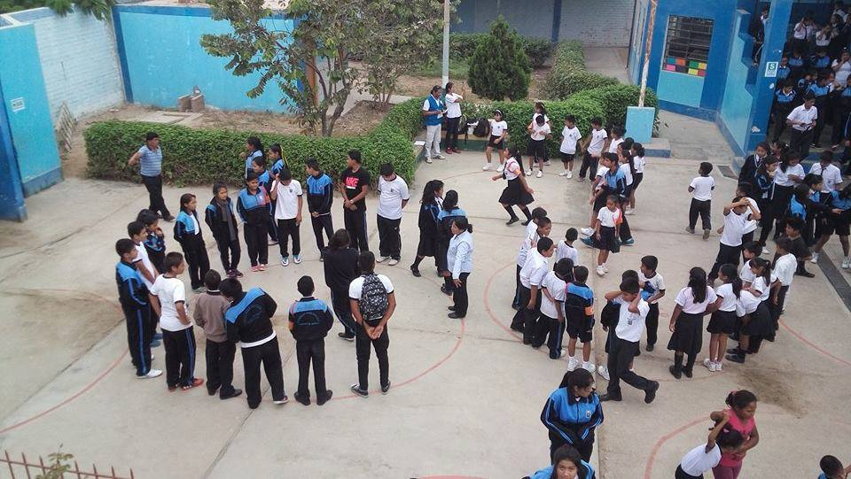
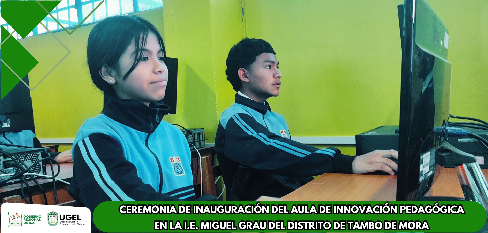
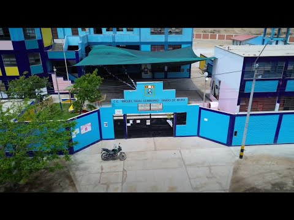
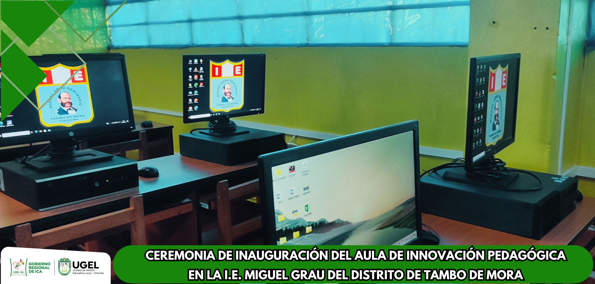
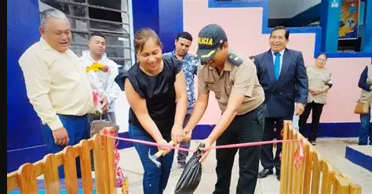
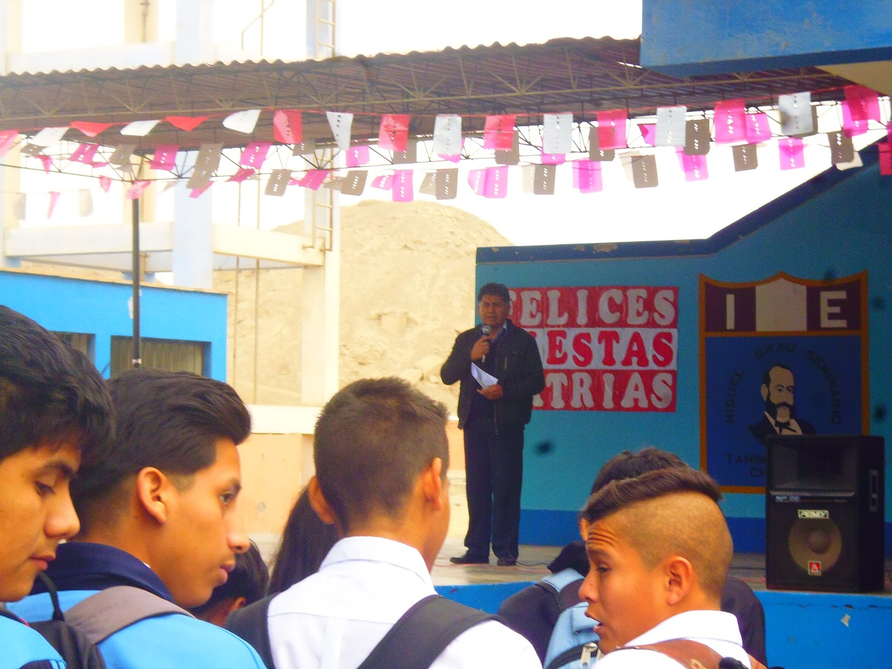
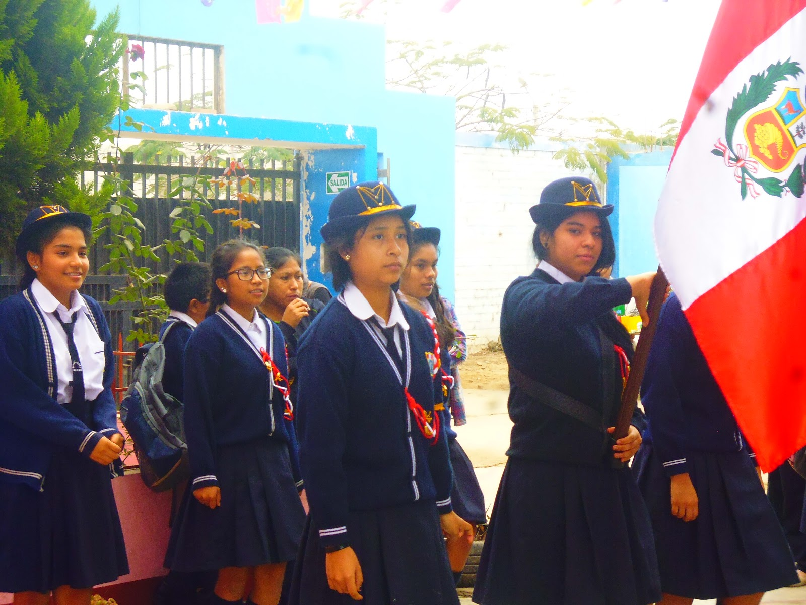
Nuestros videos
Así se vive el colegio: música, familia y homenajes.
Nuestro distrito: Tambo de Mora
Un puerto con historia: el muelle, los pescadores artesanales, el antiguo ferrocarril Chincha–Tambo de Mora y el cercano complejo arqueológico La Centinela.
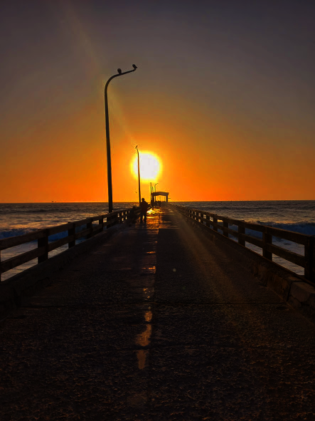
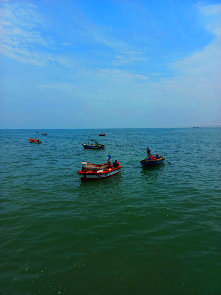
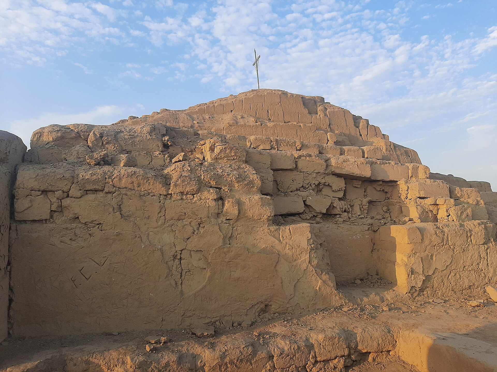
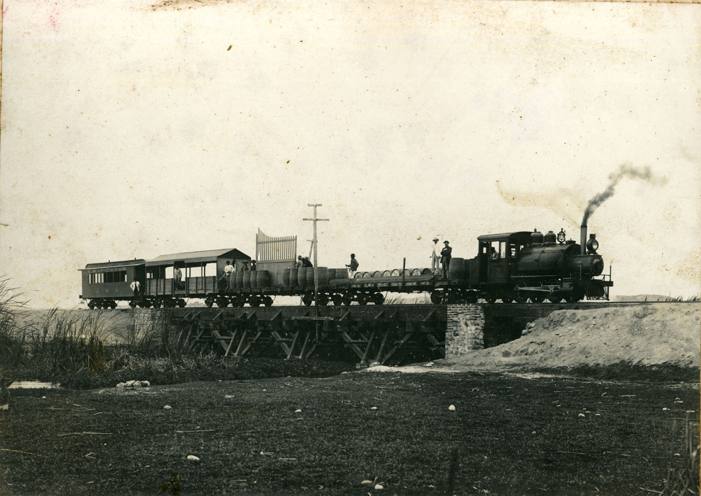
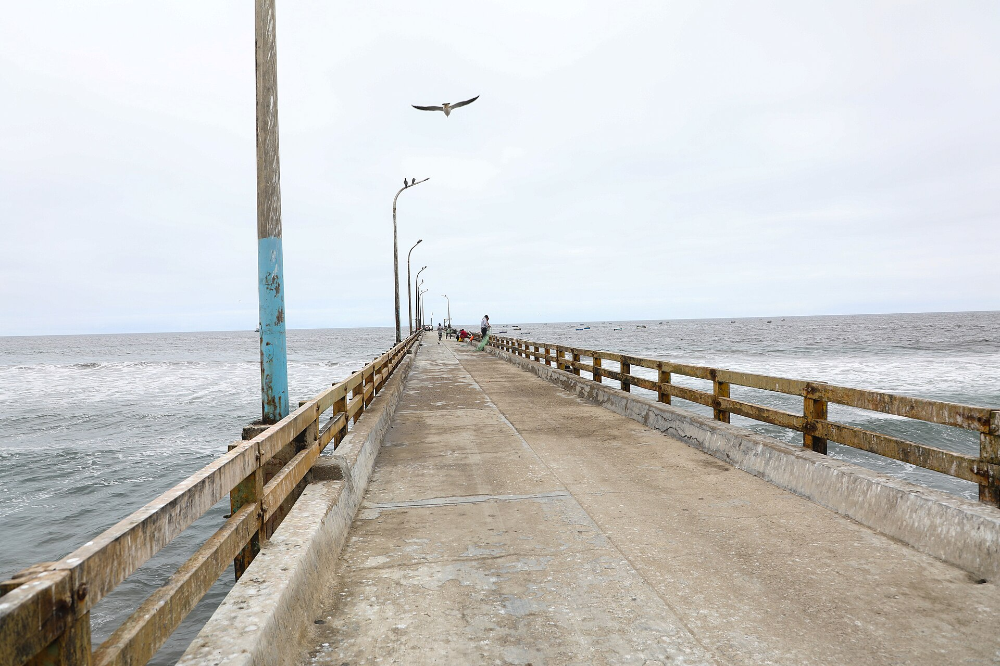
Contacto
Únete a la comunidad miguelina
"En Miguel Grau, el futuro comienza hoy." Síguenos y conoce nuestras actividades, logros y proyectos.
Correo institucional
Escuela y comunidad educativa
contacto@miguelgrauseminario.edu.peEstamos en redes
Actividades, logros y proyectos
Facebook · I.E. Miguel Grau SeminarioFormamos parte de tu comunidad
Una institución pública de acceso gratuito
Educación Básica Regular · Turno mañanaEstamos en Facebook
Síguenos en nuestras redes
Compartimos la vida del colegio en tiempo real. Esta es una de nuestras últimas publicaciones: